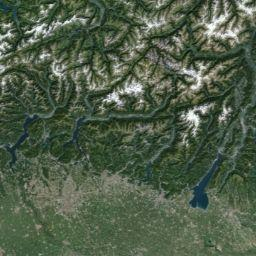

Geolocate
Geolocated Objects

Données cartographiques
Données cartographiques ©2016 GeoBasis-DE/BKG (©2009), Google, Inst. Geogr. Nacional Imagerie ©2016 TerraMetrics
Données cartographiques
Données cartographiques ©2016 GeoBasis-DE/BKG (©2009), Google, Inst. Geogr. Nacional Imagerie ©2016 TerraMetrics
Données cartographiques ©2016 GeoBasis-DE/BKG (©2009), Google, Inst. Geogr. Nacional Imagerie ©2016 TerraMetrics
Conditions d'utilisation
Signaler une erreur cartographique
Plan
Relief
Satellite
Légendes
Find a location
Lat:
Lng:
Localize Pos
|
Address:
Localize Addr
Title:
Filter Objects by tags
Tag
Add
Clear
Tags :